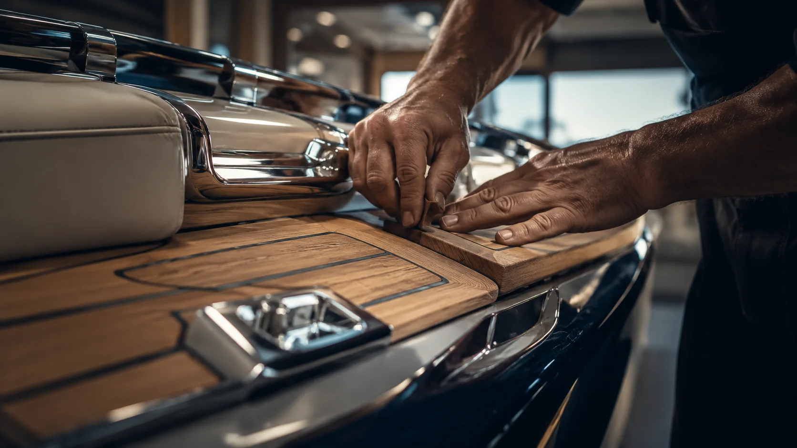
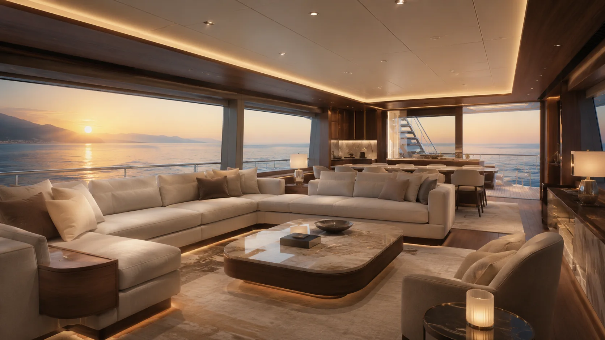
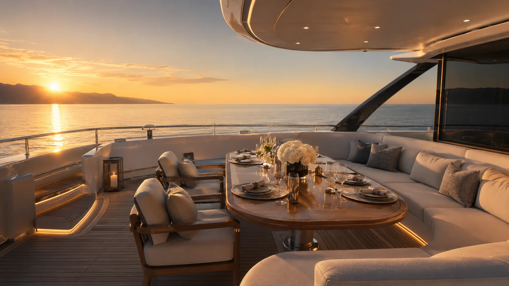
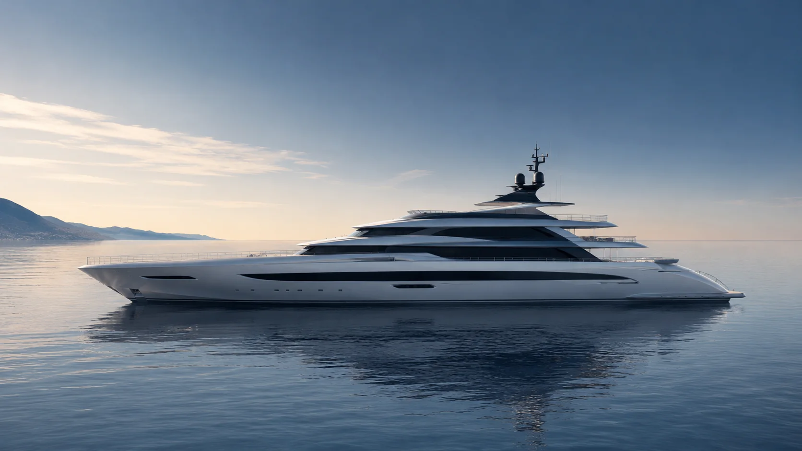
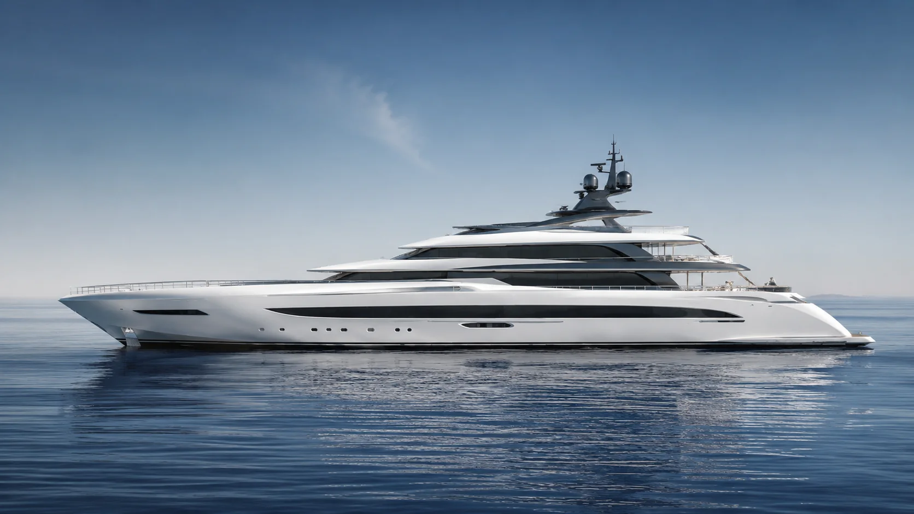
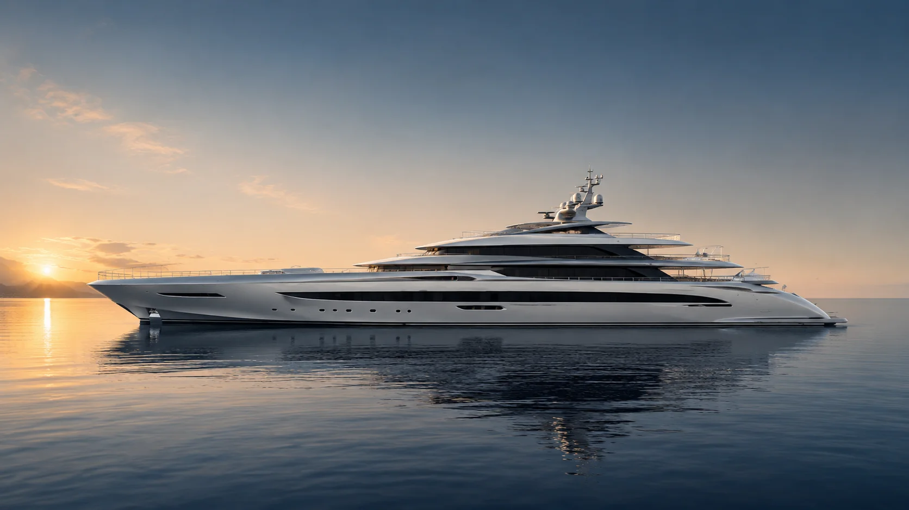
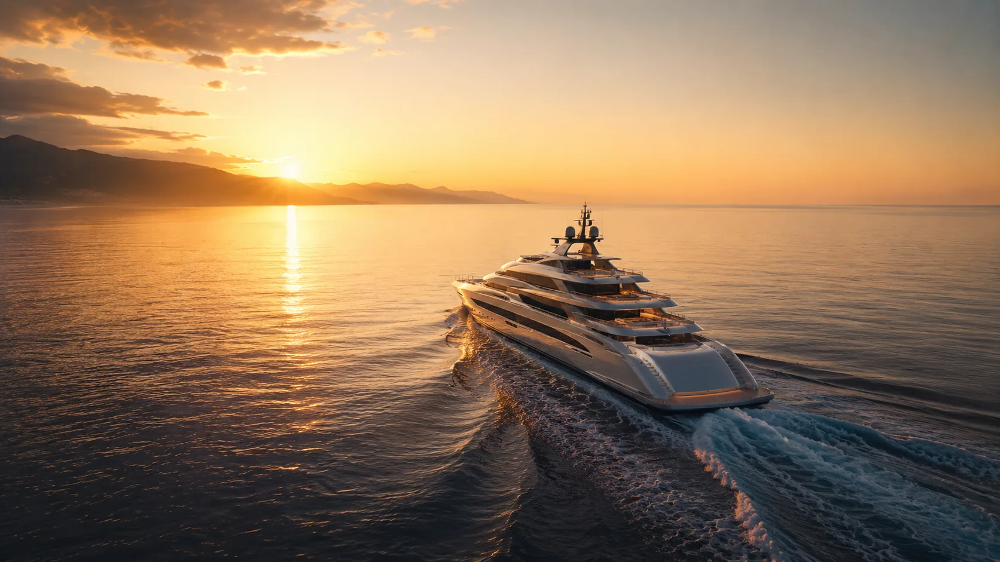

Section 01 · From Vision
Blueprints become desire.
Every line begins as intent: proportion, silhouette, balance and the quiet discipline of naval architecture.
Private Preview · Sonar Active
A cinematic yacht experience shaped by quiet water, precise craft and open-sea emotion.
Private Yacht Atelier · Since 1958
A cinematic showcase for a fictional luxury yacht house — designed to feel precise, emotional and unmistakably premium.
Section 01 · From Vision
Every line begins as intent: proportion, silhouette, balance and the quiet discipline of naval architecture.
Naval Architecture
Structure, stability and long-range performance are shaped before the first surface is ever polished.
The Shipyard
Engineering becomes tangible through controlled craft, exact tolerances and material confidence.
Hand Finished
Teak, chrome, leather and glass are refined into a single language of understated luxury.
The Reveal
The final form is not assembled. It is revealed — calm, powerful and unmistakably Aurelia.
Bespoke Craft
AURELIA is positioned as a private yacht atelier: fewer vessels, deeper personalisation, and an obsessive relationship with materials, light and movement.

Material Culture
From the satin grain of teak to the final reflection across polished chrome, each surface is designed to slow the eye down. This is where engineering becomes atmosphere.
Interior Experience
Warm woods, low indirect light and panoramic glazing create a living environment that feels intimate at anchor and cinematic at sea.


Aft Deck Rituals
The website shifts from technical trust into pure emotion — showing not just the yacht, but the feeling of ownership.
Private Fleet
Clean model cards for a polished commercial website flow — ideal for lead generation after the cinematic brand experience.

Fast, sculpted and intimate — designed for owners who want agile coastal escapes with superyacht presence.

Longer range, more volume and quiet capability — an elegant platform for extended ocean travel.

A commanding silhouette with expansive decks, panoramic glass and the calm authority of an ocean icon.
Section 02 · To Open Sea
Still water, warm light and the first hint of movement. Luxury begins before the voyage accelerates.
Departure
The yacht leaves the harbour with the calm confidence of a vessel designed to be watched.
Ocean Run
Wake, glass and sunlight become the cinematic language of performance.
Sunset Finale
The final chapter is emotional: open sea, golden light and a brand promise that feels larger than the vessel.

Begin Your Journey
A fictional brand website built as a high-end showcase for cinematic web design, scroll storytelling and luxury lead generation.
Request a private consultation